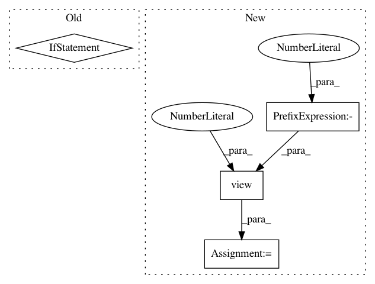

851b618c26a3ab02076e7f40a54d7542e404013b,se3cnn/SO3.py,,spherical_harmonics_xyz,#,109
Before Change
def spherical_harmonics_xyz(x, y, z, J):
with torch_default_dtype(torch.float64):
if x == y == z == 0: // angles at origin are nan, special treatment
if J == 0: // Y^0 is angularly independent, choose any angle
return spherical_harmonics(0, 123, 321) // [m]
else: // insert zeros for Y^J with J!=0
return 0
else: // not at the origin, sample spherical harmonic
alpha, beta = x_to_alpha_beta([x, y, z])
return spherical_harmonics(J, alpha, beta) // [m]
After Change
// fix values when xyz = 0
val = torch.cat([spherical_harmonics(0, 123, 321) if J == 0 else torch.zeros(2 * J + 1) for J in order]) // [m]
out[:, xyz.norm(2, -1) == 0] = val.view(-1, 1)
return out
def compose(a1, b1, c1, a2, b2, c2):
In pattern: SUPERPATTERN
Frequency: 3
Non-data size: 4
Instances
Project Name: mariogeiger/se3cnn
Commit Name: 851b618c26a3ab02076e7f40a54d7542e404013b
Time: 2018-12-10
Author: geiger.mario@gmail.com
File Name: se3cnn/SO3.py
Class Name:
Method Name: spherical_harmonics_xyz
Project Name: ikostrikov/pytorch-a2c-ppo-acktr
Commit Name: c28b2e4cfd60a5b131a1f8752d484b9c99d05e81
Time: 2017-11-17
Author: ikostrikov@gmail.com
File Name: main.py
Class Name:
Method Name: main
Project Name: Kaixhin/Rainbow
Commit Name: a4df4a6f648053e4ad05bbcfc06a87c6fa984e53
Time: 2018-02-15
Author: kaia@fb.com
File Name: model.py
Class Name: DQN
Method Name: forward